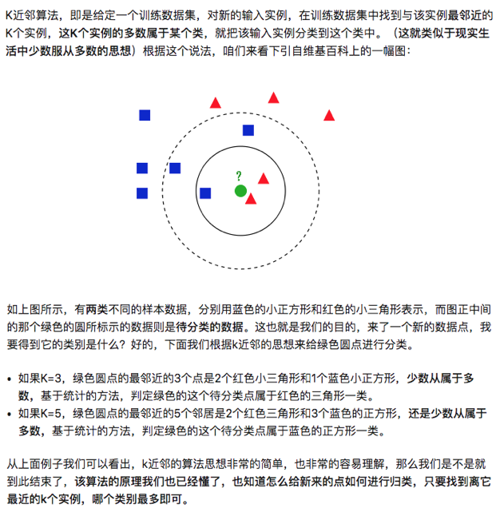
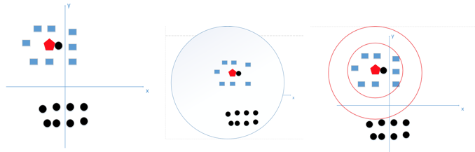
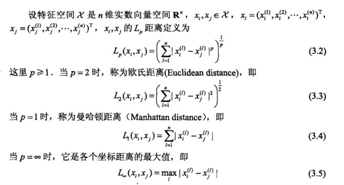

KNN 其实没有什么训练模型过程，它会直接对新数据进行分类。方法：计算新数据点和 dataset 中的所有点的距离，取前 k（KNN 算法参数）个最近的数据点并统计他们的 label，新数据点将归入统计出现最多次数的label。 以下几个细节请注意：
1. 关于 k 值选取

图中蓝色方块和黑色圆点是已有的两类数据点，红色五边形是新数据点。肉眼可看出该数据分类为蓝色方块比较合理。
- 假设 k = 1 时，此时新数据由于离黑色原点最近，只能归入它的分类。k 取小容易学习到噪声
- 假设 k = N（N为训练样本的个数），那么无论输入什么新数据，都将被归入训练数据中最多的类。
因此图 3 两红色圆圈范围内的k比较合理。一般的，可以先选取一个较小的 k，再通过 CV 验证来调整该超参数。
2. 距离度量方法
一般选择欧式距离（矢量模）

3. 特征归一化的必要性
举例：用一个人身高(cm)与脚码（尺码）大小来作为特征值，类别为男性或者女性。我们现在如果有5个训练样本，分布如下：
A [(179,42),男] B [(178,43),男] C [(165,36)女] D [(177,42),男] E [(160,35),女]
因为由于各个特征的量纲不同，在这里导致了身高的重要性已经远远大于脚码了（身高的数值是脚码的四倍左右），这是不客观的。所以特征归一化是为了让每个特征都是同等重要。